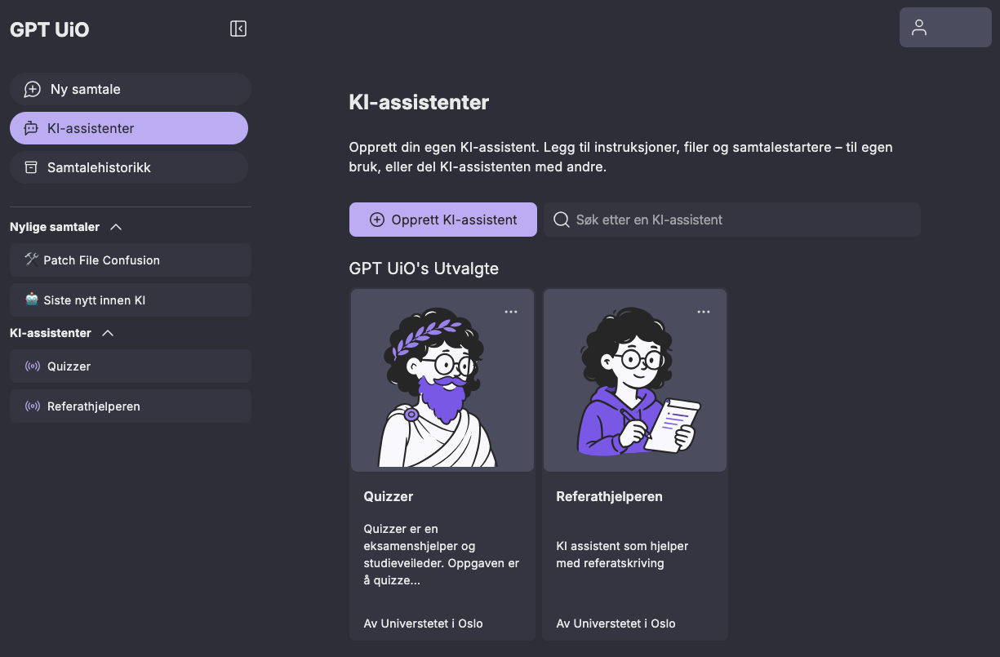

GPT UiO: AI assistants
In GPT UiO you can create your own AI assistants. An AI assistant is a set of saved prompts that you can use multiple times. These prompts can be simple or complex.
For example, you can give an instruction that a text should “be translated into Norwegian with formal, academic language, and that abbreviations and journal titles should not be translated.”. This is a simple AI assistant that can save you time if you often need to ask the AI to translate like this.
A complex assistant contains many prompts, for example detailed instructions for what role the assistant should have, thorough instructions on how it should respond, and perhaps also what format you want the answer in. One example is to create an AI assistant that acts as an experienced student administration adviser at UiO: It should always explain regulations in a simple way, suggest standard wordings for emails, and give the answers in a structured form with headings and bullet points so they can be copied straight into case documents.
GPT UiO has its own assistant feature: if you use a prompt often, it can be smart to save it in an assistant instruction (also called a pre-prompt). Then you can quickly start a conversation based on the prompt, without having to write it again. This can be useful for tasks you do often, for example translation or getting critical feedback on text.


When you create the assistant you can, among other things:
- upload files, so that the model can search them and use relevant information in its answers
- choose a specific language model for the assistant to use
- share the assistant with others, for example colleagues or students.
UiO also offers some selected quality-assured AI assistants that many may find useful.
Example of an assistant instruction
After clicking “Create AI assistant” you enter your assistant instruction. Here you see an example of one. Remember to use the good prompting techniques you have learned when you try this yourself!